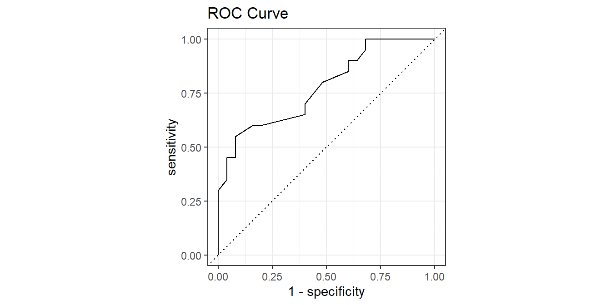

5.1 Logistic Regression
Logistic regression estimates the probability of a particular level of a categorical response variable given a set of predictors. The response levels can be binary, nominal (multiple categories), or ordinal (multiple levels).
The binary logistic regression model is
\[y = logit(\pi) = \ln \left( \frac{\pi}{1 - \pi} \right) = X \beta\]
where \(\pi\) is the event probability. The model predicts the log odds of the response variable. The maximum likelihood estimator maximizes the likelihood function
\[L(\beta; y, X) = \prod_{i=1}^n \pi_i^{y_i}(1 - \pi_i)^{(1-y_i)} = \prod_{i=1}^n\frac{\exp(y_i X_i \beta)}{1 + \exp(X_i \beta)}.\]
There is no closed-form solution, so GLM estimates coefficients with interatively reweighted least squares.
Here is a case study to illustrate the points. Dataset donner contains observations of 45 members of the Donner party with response variable (surv) an explanatory variables age and sex.
## Rows: 45
## Columns: 3
## $ age <dbl> 23, 40, 40, 30, 28, 40, 45, 62, 65, 45, 25, 28, 28, 23, 22, 23...
## $ sex <fct> M, F, M, M, M, M, F, M, M, F, F, M, M, M, F, F, M, F, F, M, F,...
## $ surv <fct> Died, Lived, Lived, Died, Died, Died, Died, Died, Died, Died, ...donner %>% mutate(surv = as.numeric(surv)-1) %>%
ggplot(aes(x = age, y = surv, color = sex)) +
geom_jitter() +
geom_smooth(method = "glm", method.args = list(family = "binomial"), se = FALSE) +
theme_mf() +
labs(title = "Donner Party Survivorship", color = "")## `geom_smooth()` using formula 'y ~ x'
Fit a logistic regression \(SURV = SEX + AGE + SEX : AGE\).
##
## Call:
## glm(formula = surv ~ sex * age, family = binomial(link = logit),
## data = donner)
##
## Deviance Residuals:
## Min 1Q Median 3Q Max
## -2.228 -0.939 -0.555 0.779 1.700
##
## Coefficients:
## Estimate Std. Error z value Pr(>|z|)
## (Intercept) 7.2464 3.2052 2.26 0.024 *
## sexM -6.9280 3.3989 -2.04 0.042 *
## age -0.1941 0.0874 -2.22 0.026 *
## sexM:age 0.1616 0.0943 1.71 0.086 .
## ---
## Signif. codes: 0 '***' 0.001 '**' 0.01 '*' 0.05 '.' 0.1 ' ' 1
##
## (Dispersion parameter for binomial family taken to be 1)
##
## Null deviance: 61.827 on 44 degrees of freedom
## Residual deviance: 47.346 on 41 degrees of freedom
## AIC: 55.35
##
## Number of Fisher Scoring iterations: 5The “z value” in the Coefficients table is the Wald z statistic, \(z = \hat{\beta} / SE(\hat{\beta})\), which if squared is the Wald chi-squared statistic, \(z^2\). The p.value is the area to the right of \(z^2\) in the \(\chi_1^2\) density curve:
m %>% tidy() %>%
mutate(
z = estimate / std.error,
p_z2 = pchisq(z^2, df = 1, lower.tail = FALSE)
) %>%
select(term, estimate, z, p_z2) ## # A tibble: 4 x 4
## term estimate z p_z2
## <chr> <dbl> <dbl> <dbl>
## 1 (Intercept) 7.25 2.26 0.0238
## 2 sexM -6.93 -2.04 0.0415
## 3 age -0.194 -2.22 0.0264
## 4 sexM:age 0.162 1.71 0.0865Below the Coefficients table, the “dispersion parameter” refers to overdispersion, a common issue with GLM. For a logistic regression, the response variable should be distributed \(y_i \sim Bin(n_i, \pi_i)\) with \(\mu_i = n_i \pi_i\) and \(\sigma^2 = \pi (1 - \pi)\). Overdispersion means the data shows evidence of variance greater than \(\sigma^2\).
“Fisher scoring” is a method for ML estimation. Logistic regression uses an iterative procedure to fit the model, so this section indicates whether the algorithm converged.
The null deviance is the likelihood ratio \(G^2 = 61.827\) of the intercept-only model. The residual deviance is the likelihood ratio \(G^2 = 47.346\) after including all model covariates. \(G^2\) is large, so reject the null hypothesis of no age and sex effects. The ANOVA table shows the change in deviance from adding each variable successively to the model.
## Analysis of Deviance Table
##
## Model: binomial, link: logit
##
## Response: surv
##
## Terms added sequentially (first to last)
##
##
## Df Deviance Resid. Df Resid. Dev
## NULL 44 61.8
## sex 1 4.54 43 57.3
## age 1 6.03 42 51.3
## sex:age 1 3.91 41 47.3## # A tibble: 1 x 7
## null.deviance df.null logLik AIC BIC deviance df.residual
## <dbl> <int> <dbl> <dbl> <dbl> <dbl> <int>
## 1 61.8 44 -23.7 55.3 62.6 47.3 41Plug in values to interpret the model. The log odds of a 24 year-old female surviving is \(\hat{y} = 2.59\). The log odds of a 24 year-old male surviving is \(\hat{y} = -0.46\).
coef(m)["(Intercept)"] + coef(m)["sexM"]*0 + coef(m)["age"]*24 +
coef(m)["sexM:age"]*0*24
coef(m)["(Intercept)"] + coef(m)["sexM"]*1 + coef(m)["age"]*24 +
coef(m)["sexM:age"]*1*24
# Or use predict()
(lo_f <- predict(m, newdata = data.frame(sex = "F", age = 24)))
(lo_m <- predict(m, newdata = data.frame(sex = "M", age = 24)))Log odds are not easy to interpet. Exponentiate the log odds to get the odds.
\[odds(\hat{y}) = \exp (\hat{y}) = \frac{\pi}{1 - \pi}.\]
The odds of a 24 year-old female surviving is \(\exp(\hat{y}) = 13.31\). The odds of a 24 year-old male surviving is \(\exp(\hat{y}) = 0.63\).
Solve for \(\pi\) to get the probability.
\[\pi = \frac{\exp (\hat{y})}{1 + \exp (\hat{y})}\]
The probability of a 24 year-old female surviving is \(\pi = 0.93\). The probability of a female of average age surviving is \(\pi = 0.39\). The predict() function for a logistic model returns log-odds, but can also return \(\pi\) by specifying parameter type = "response".
exp(lo_f) / (1 + exp(lo_f))
exp(lo_m) / (1 + exp(lo_m))
# Or use predict(..., type = "response")
(p_f <- predict(m, newdata = data.frame(sex = "F", age =24), type = "response"))
(p_m <- predict(m, newdata = data.frame(sex = "M", age =24), type = "response"))Interpret the coefficient estimates using the odds ratio, the ratio of the odds before and after an increment to the predictors. The odds ratio is how much the odds would be multiplied after a \(\delta = X_1 - X_0\) unit increase in \(X\).
\[\theta = \frac{\pi / (1 - \pi) |_{X = X_1}}{\pi / (1 - \pi) |_{X = X_0}} = \frac{\exp (X_1 \hat{\beta})}{\exp (X_0 \hat{\beta})} = \exp ((X_1-X_0) \hat{\beta}) = \exp (\delta \hat{\beta})\]
The odds of a female surviving are multiplied by a factor of \(\exp(1 \cdot (-0.19)) = 0.824\) per additional year of age (or the odds fall by \(1 - 0.824 = 17.6\%\)). The odds of a male surviving are multiplied by a factor of \(\exp(1 \cdot (-0.161-0.19)) = 0.968\) per additional year of age.
exp(1 * (coef(m)["age"] + 0*coef(m)["sexM:age"])) # female
exp(1 * (coef(m)["age"] + 1*coef(m)["sexM:age"])) # maleoddsratio::or_glm() calculates the odds ratio from an increment in the predictor values.
## predictor oddsratio ci_low (2.5) ci_high (97.5) increment
## 1 sexM 0.001 0.00 0.24 Indicator variable
## 2 age 0.824 0.65 0.94 1
## 3 sexM:age 1.175 1.00 1.50 Indicator variableThe predicted values can also be expressed as the probabilities \(\pi\). This produces the familiar signmoidal shape of the binary relationship.
augment(m, type.predict = "response") %>%
ggplot(aes(x = age)) +
geom_point(aes(y = surv)) +
geom_line(aes(y = .fitted+1)) +
theme_mf() +
labs(x = "AGE",
y = "Probability of SURVIVE",
title = "Binary Fitted Line Plot")
Evaluate a logistic regression using a Gain curve or ROC curve.
In the gain curve, the x-axis is the fraction of items seen when sorted by the predicted value, and the y-axis is the cumulative summed true outcome. The “wizard” curve is the gain curve when the data is sorted by the true outcome. If the model’s gain curve is close to the wizard curve, then the model predicted the response variable well. The grey area is the “gain” over a random prediction.
20 of the 45 members of the Donner party survived.
- The gain curve encountered 10 survivors (50%) within the first 12 observations (27%). It encountered all 20 survivors on the 37th observation.
- The bottom of the grey area is the outcome of a random model. Only half the survivors would be observed within 50% of the observations.
- The top of the grey area is the outcome of the perfect model, the “wizard curve”. Half the survivors would be observed in 10/45=22% of the observations.
options(yardstick.event_first = FALSE) # set the second level as success
augment(m, type.predict = "response") %>%
yardstick::gain_curve(surv, .fitted) %>%
autoplot() +
labs(title = "Gain Curve")The ROC (Receiver Operating Characteristics) curve plots sensitivity vs specificity at different cut-off values for the probability, ranging cut-off from 0 to 1.
options(yardstick.event_first = FALSE) # set the second level as success
augment(m, type.predict = "response") %>%
yardstick::roc_curve(surv, .fitted) %>%
autoplot() +
labs(title = "ROC Curve")